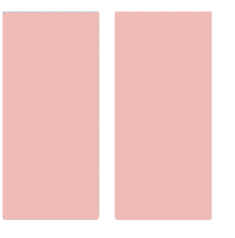
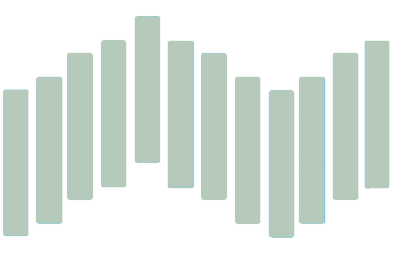
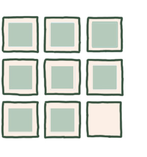
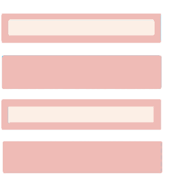
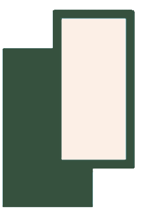
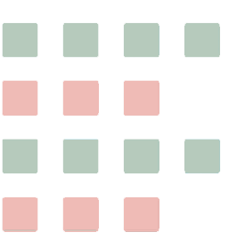
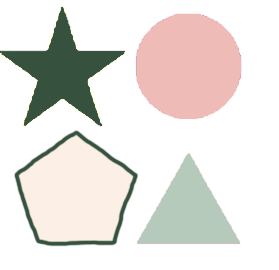
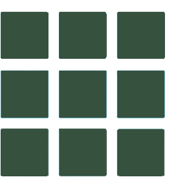

Visual hierarchy is a vital part of good design. If everything on your page looks like it has the same importance, then nothing appears important. You need to use visual cues to tell people what to pay attention to first, second, third, etc.
Create visual hierarchy through things like scale (the relative size of elements) and color. Typographic hierarchy can be created by using different typefaces, sizes, and font weights.
The point is to make sure the most important element on the page stands out among the rest.

Balance within a composition can be achieved in a couple of different ways. Symmetrical balance is the most straightforward. It’s achieved when elements on either side of a central vertical axis are basically the same. For example, two text blocks on either side of the page would create symmetrical balance, even if the content of those blocks wasn’t identical.
Asymmetrical balance is achieved when the elements on either side of a central axis aren’t the same. For example, you might have a large image on one side balanced out by prominent text on the other. It can also be achieved when the vertical axis that divides two elements isn’t placed directly in the center of the page. In that case, the narrower element should have a “heavier” visual weight than the wider one to achieve a balanced look.
Whichever type of balance technique you use, the result should feel right. It should give the viewer a sense of harmony and not make them feel uneasy.

Alignment refers to how text or graphic elements are lined up on a page. This can refer to their alignment in relation to the entire composition (left, center, or right-aligned) as well as their alignment to one another.
When elements aren’t aligned properly, especially in relation to one another, it adds a sense of chaos to the composition. It looks haphazard and messy.
When it comes to this principle of design, be sure to align elements properly in relation to one another, and be consistent with the alignment of various elements, such as always centering headlines.

Emphasis is the part of a design that catches the eye of the user—a focal point, in other words. Ideally, this should be the most important part of the design, whether that’s the headline, an image, or a CTA. But that doesn’t always happen.
Inexperienced designers may inadvertently emphasize the wrong parts of the page, creating confusion on the part of the user.
Be sure to emphasize the parts you want your users to look at first. You can do this through things like scale, white space, color, shadow, pattern, or other techniques.

Proportion, also referred to as scale, is the relative size of objects within a design. Elements that are larger in relation to others will stand out more and appear to have more importance to users. Smaller elements appear less important.
Use proportion to create visual interest by drawing the viewer’s eye to particular visual elements within your designs.
Just keep in mind that too much of a difference in the scale of items can make the smallest items get lost entirely, or make the largest ones appear comically large.
Movement refers to the way a user’s eyes move across your composition. Dynamic designs encourage lots of eye movement, while static ones encourage less. The best designers can, to an extent, control which elements users focus on by placing them along the path of the most natural eye movement patterns.
It’s important to familiarize yourself with the most common eye movement patterns, F- and Z-patterns, and the layer cake pattern. F- and Z-patterns are more common on image-heavy pages, while the layer cake pattern is facilitated by lots of text with headings and subheadings.

Negative space in a design, also called white space, is space that has no design elements (other than possibly a background color or subtle pattern or texture).
As a design principle, negative space is essential because it gives the elements in your composition room to breathe. Without white space, pages look cluttered and are hard to navigate.
Be sure to leave some space around elements on your pages, especially the most important ones. This white space makes them stand out more and facilitates a better user experience.

Contrast can be achieved through color, shape, size, or similar properties of elements, and refers to the differences between them. Color contrast is often the first thing people think of, but differences in the sizes of elements, their shape, or some other property also create contrast.
Contrast serves two very important functions. First, it allows you to make elements stand out from one another. A complete lack of contrast would result in a design that’s simply a single background color with no other visible elements — not exactly a functional design. A design where you can see different elements automatically has some level of contrast.
The second important function of contrast is accessibility. Sufficient contrast between elements, especially text and its background, is vital for creating an accessible design. People with vision impairments can have a difficult time reading text on a screen that is too small or does not have sufficient color contrast. There are accessibility tools available for checking that your designs have sufficient color contrast for accessibility purposes.

Repetition refers to using the same or similar elements throughout your design, either in regular or irregular patterns. It’s used to reinforce certain elements while also providing a sense of unity and continuity to your design. Repetition can be used to create rhythm, which helps move users through your designs.
Employ repetition in simple ways—such as using the same icons throughout, in background patterns, or through things like styling all of your photos in the same way.
Experiment with repetition, particular irregular repetition, to create movement, but beware that too much regular repetition can have the opposite effect and make your design feel static.

Variety is the spice of life, right? The same goes for design. While repetition adds a sense of harmony to your design, variety keeps it interesting and prevents users from getting bored.
Create variety by adding unique or unexpected elements to your designs. Variety can be used to draw the user’s attention to specific elements or areas of the design, and make them stand out.

Unity gives a design and sense of harmony, both visually and conceptually. Unity is important because it makes users feel at ease while navigating your design. Everything appears to be in its proper place and there are no jarring elements that stand out in a negative way.
Unity can be created in a number of ways. The primary methods are through:
- Proximity — Elements close to one another appear to be a unified group
- Alignment — Elements aligned with one another appear to be related
- Repetition — Elements that are repeated also create a sense of unity, especially if that repetition is done in a regular pattern.
Learning and following established design principles in graphic design allows you to create more cohesive designs that delight users and offer exceptional user experiences.
Disregarding these principles of design should be done with caution, and only after you have a thorough understanding of them and the purposes they serve.